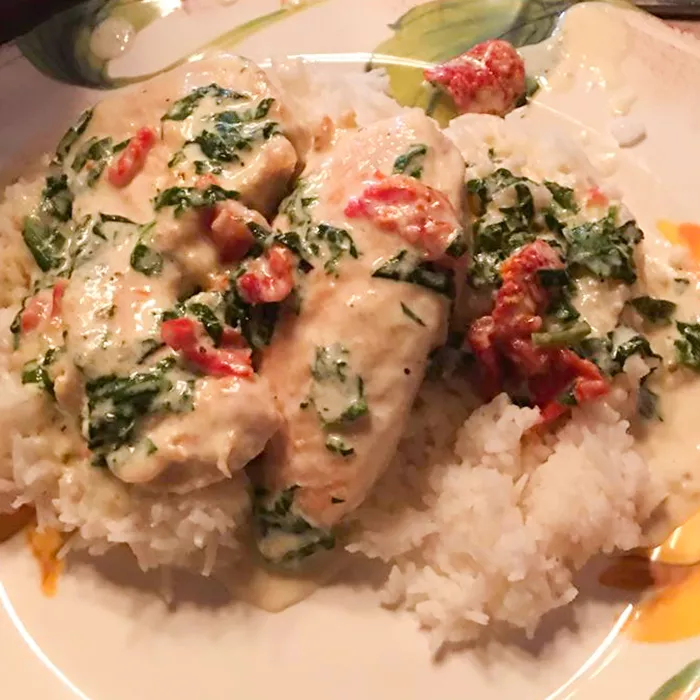

Tuscan Chicken

How to make the perfect Tuscan Chicken!
This creamy tuscan chicken is a perfect meal that hits all your tastebuds! It has a wonderful garlic parmesan cream sauce that smothers your chicken cut of choice. It's also glammed up with spinach, onion, and fresh or sundried tomatoes. Serve over rice or pasta. Enjoy!
Ingredients
- 2 Tablespoons olive oil
- 1 1/2 pounds boneless, skinless chicken breasts, thinly sliced
- 1 cup heavy cream
- 1/2 cup chicken broth
- 1/2 cup grated Parmesan cheese
- 1 teaspoon garlic powder
- 1 teaspoon Italian seasoning
- 1 cup spinach, chopped
- 1/2 cup chopped sun-dried tomatoes
Steps
- Heat olive oil in a large skillet over medium-high heat. Cook chicken until browned and no longer pink in the center, 3 to 5 minutes per side. Remove chicken and set aside on a plate.
- Add heavy cream, chicken broth, Parmesan cheese, garlic powder, and Italian seasoning to the skillet. Whisk sauce over medium-high heat until starting to thicken, about 5 minutes. Add spinach and sun-dried tomatoes; simmer until spinach starts to wilt, about 1 minute. Return chicken to the skillet and cook until heated through, 2 to 3 minutes.